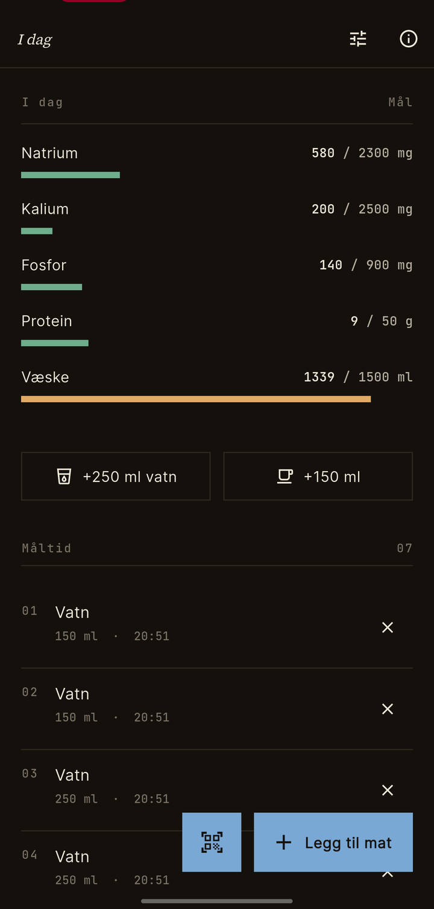
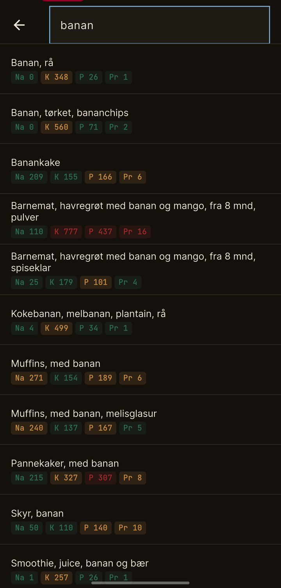
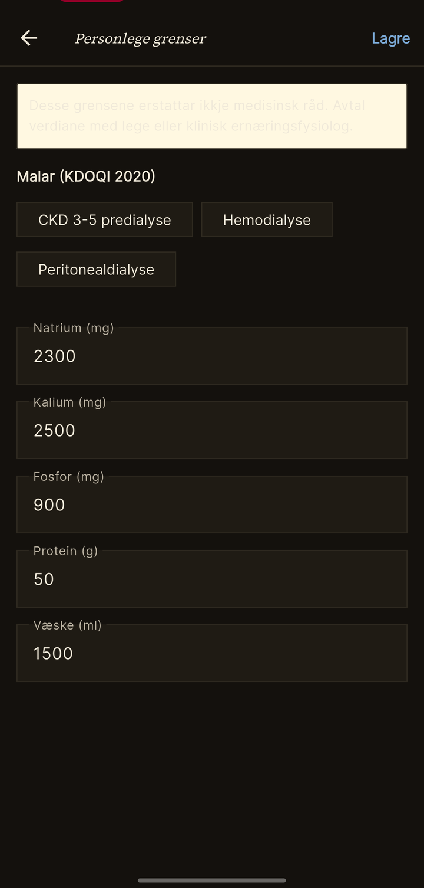

01 / Database
Mattilsynet sin matvaretabell, baka inn i appen.
Over 2 000 norske matvarer med næringsverdiar for natrium, kalium, fosfor, kalsium, protein og meir. Ingen nettforbindelse trengs for søk.
Hald oversikt over salt, kalium, fosfor, protein og væske — utan kontoar, sky eller telemetri. Berre din telefon, dine grenser, dine måltid.
Status — mai 2026
Appen er publisert på Google Play, men berre testarar med invitasjon kan laste han ned. Vi søkjer ei lita gruppe brukarar — pasientar, pårørande, klinisk ernæringsfysiologar — som vil prøve han ut i kvardagen og sende tilbake kva som fungerer og kva som ikkje gjer det.
Eg vil bli testerDu treng ein Gmail-konto. Eg legg deg til på testarlista og sender ein opt-in-lenke.
Slik ser det ut
Fem barer, fem fargar. Grøn er innanfor, gul nærmar seg grensa, raud er over. Verdiane er dine eigne — sett av deg eller saman med dietisten din.
Trykk for detaljar. Sveip for å slette. Det skal ikkje vere meir komplisert enn det.
Over 2 000 norske matvarer med næringsverdiar for natrium, kalium, fosfor, kalsium, protein og meir. Ingen nettforbindelse trengs for søk.
Appen finn produktnavnet via Open Food Facts og foreslår ei matchande matvare frå Matvaretabellen. Du bekreftar éin gong — deretter går det automatisk.
CKD stadium 3-5, hemodialyse og peritonealdialyse. Eller skriv inn dine eigne tal etter samtale med behandlande lege eller klinisk ernæringsfysiolog.
Inga sky-synking, ingen brukarkonto, ingen analytikk. Avinstallerer du appen, er dataen borte. Du eig han fullt ut, slik det skal vere med helsedata.



Det er ingen norsk diettapp for personar med kronisk nyresjukdom. Det manglar — og det er rart, gitt at dietten gjerne er det viktigaste verktøyet pasienten har sjølv.Bakgrunn for prosjektet